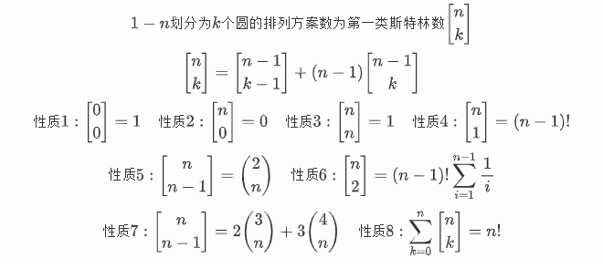
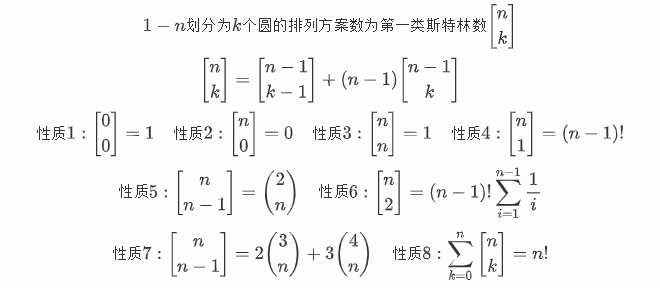

第一类斯特林数

f[0][0]=1;
for(int i=1;i<=n;i++){
for(int j=1;j<=m;j++){
f[i][j]=(f[i-1][j-1]+(ll)(i-1)*f[i-1][j])%mod;
}
}

f[0][0]=1;
for(int i=1;i<=n;i++){
for(int j=1;j<=m;j++){
f[i][j]=(f[i-1][j-1]+(ll)(i-1)*f[i-1][j])%mod;
}
}
From here you can search these documents. Enter your search terms below.
| Keys | Action |
|---|---|
| ? | Open this help |
| n | Next page |
| p | Previous page |
| s | Search |